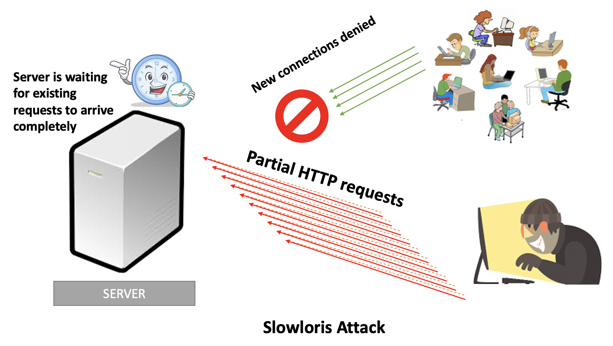

This exercise will demonstrate Slowloris attack and analyze the resources it consumes.
A Slowloris attack is an application-layer attack, which operates by utilizing partial HTTP requests. The attack functions by opening connections to a targeted Web server and then keeping those connections open as long as it can.

Slowloris keeps connections open by continuously sending partial Web requests. Since the request is never completed the server cannot process it and close the connection. Affected servers will keep these connections open, filling their maximum concurrent connection pool, eventually denying additional connection attempts from legitimate clients.
You can find the Slowloris attack tool on the attacker node in /tmp/attacker/slowloris folder. The tool was cloned from https://github.com/gkbrk/slowloris.
sudo apt-get update
sudo apt-get install apache2
sudo sysctl -w net.ipv4.tcp_syn_retries=1
sudo sysctl -w net.ipv4.tcp_max_syn_backlog=10000
wget server --connect-timeout=10 or curl server --connect-timeout=10
Next, start collecting tcpdump on the server node. tcpdump is the most powerful and widely used command-line packets sniffer or packet analyzer tool, which is used to capture TCP/IP packets that are received or transferred over a network on a specific interface. We capture packets in this exercise, so that we can measure the time taken by each connection.
For a closer look into resource consumption, write a script to probe the output of netstat command every second. This will help you measure the number of open sockets, connections and their current states.
cd /tmp/attacker/slowloris
python3 slowloris.py server -s 3500 --sleeptime 0
The connection duration of a successful connection is the time elapsed between the server receiving the first SYN packet and the last FIN on the connection. Measure the durations for all legitimate connections and attack connections separately.
Also, measure the number of unsuccessful connections per second -- these connections just have repeating SYN packets. Plot the number of successful attack and legitimate connections, and the number of unsuccessful attack and legitime connections per second in a graph.
Use the output of the netstat script to find the number of sockets per second that are in SYN_RECV state. SYN_RECV denotes that a connection request has been received from the network but the connection has not yet progressed to ESTABLISHED state.